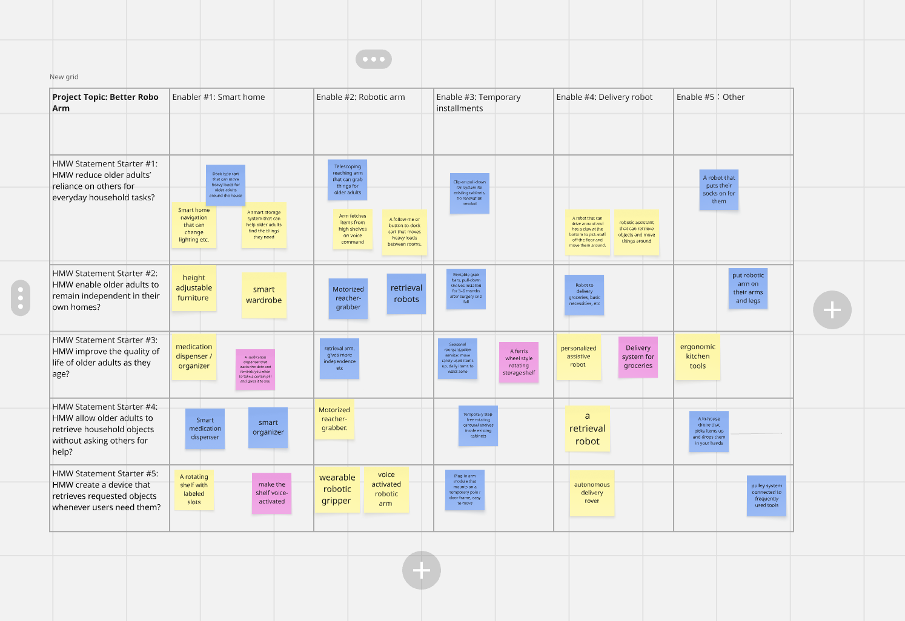
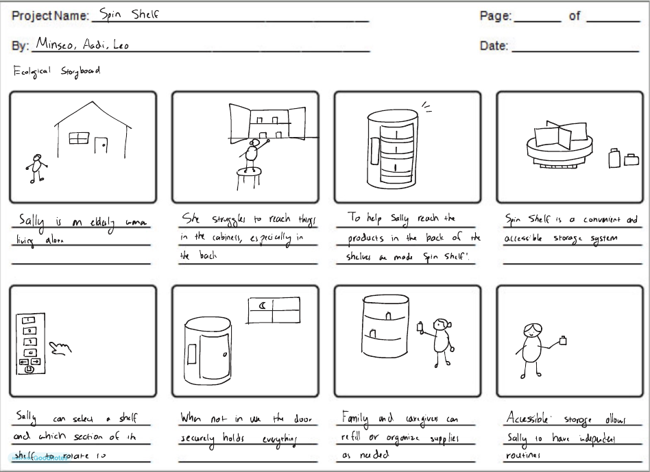
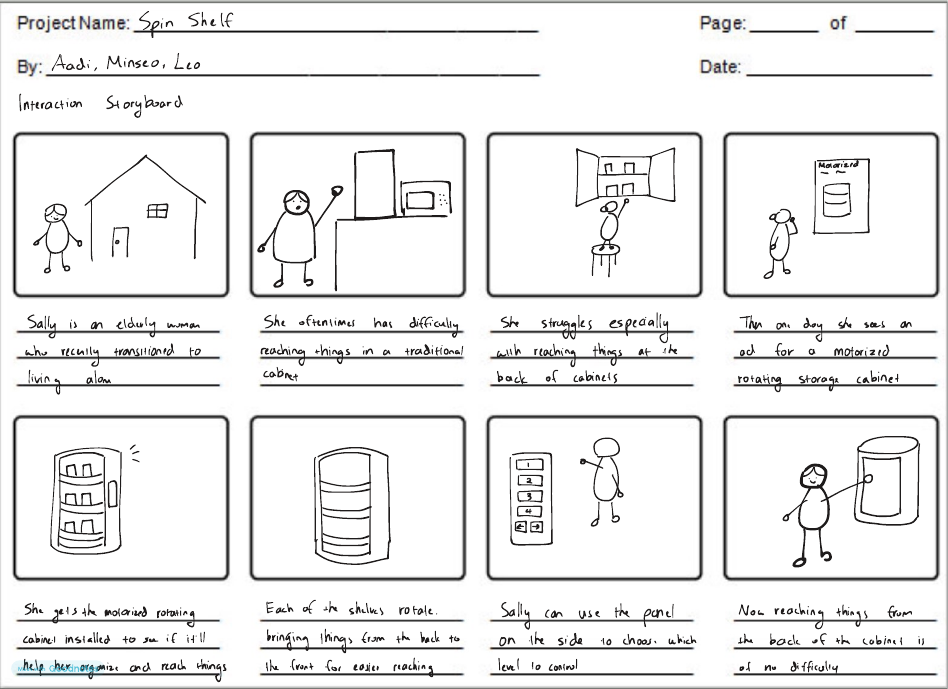
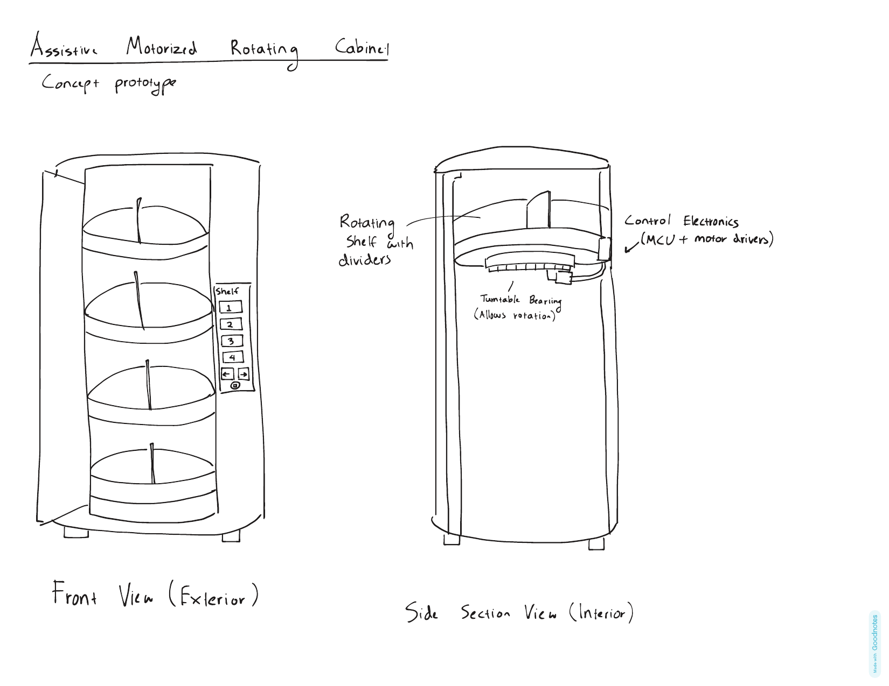
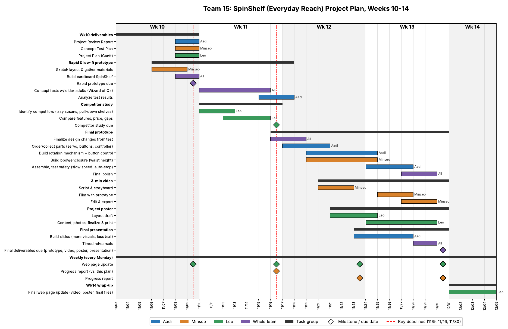
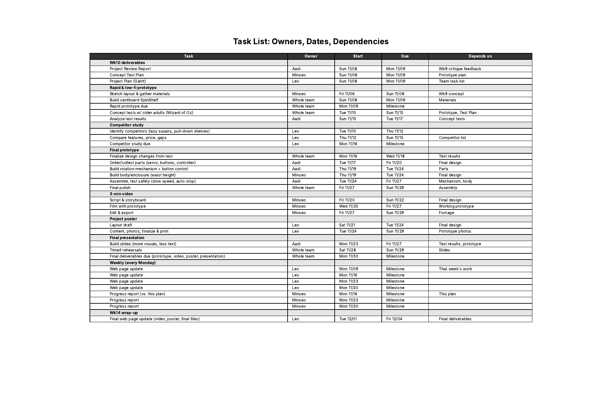
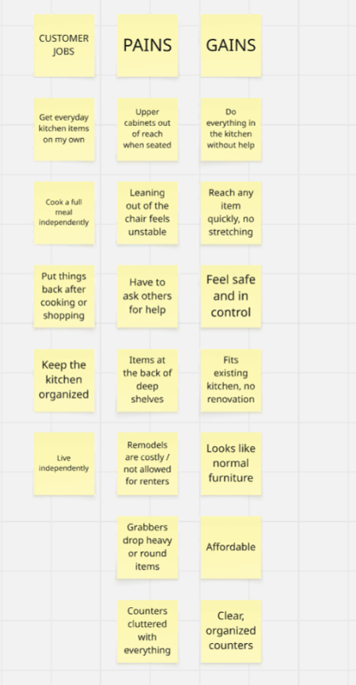
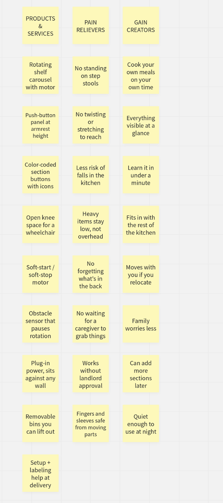
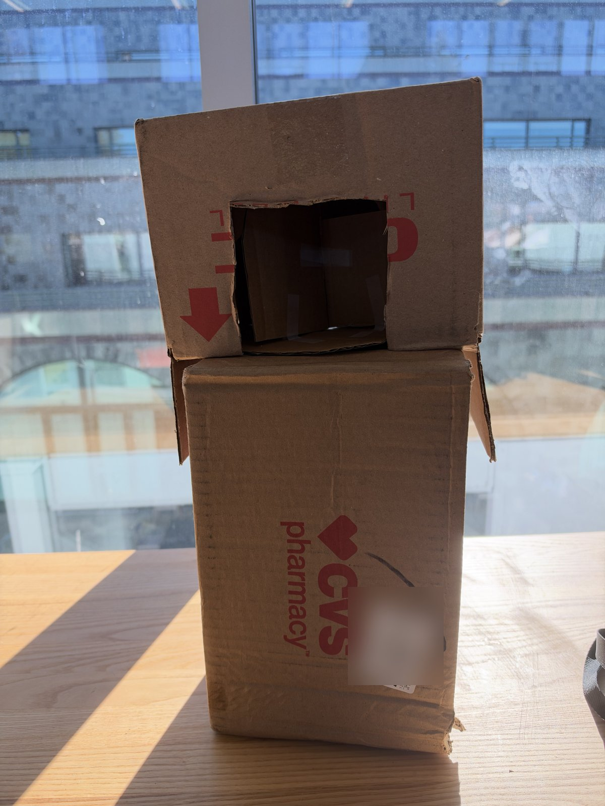

Minseo
Technical · hardware focus
DES INV 15 · Fall 2026 · UC Berkeley
Helping wheelchair users reach everyday kitchen items on their own
Who’s on the DES INV 15 project.
Technical · hardware focus
Technical · hardware focus
Software · business & management focus
We’re looking at everyday kitchen reaching for wheelchair users: getting items from high cabinets, pulling things from the back of deep shelves, and putting groceries away, without leaning out of the chair or waiting on someone else.
What we’re trying to understand before we jump to ideas.
Wheelchair users want to cook and keep house on their own, but standard kitchens fight that. Upper cabinets sit out of seated reach. Deep shelves hide items in the back. Leaning out of the chair to grab something feels unstable, and grabbers often drop heavy or round things. Asking a roommate, partner, or caregiver for every spice jar or cereal box chips away at independence. The problem isn’t one dramatic moment; it’s dozens of ordinary kitchen tasks each week that require help or a risky stretch.
Kitchen independence is part of living independently. When everyday items stay out of reach from a seated position, people either lean in ways that feel unsafe, clutter counters with everything they might need, or wait for someone else. Renters often can’t remodel for lower cabinets, and costly full kitchen renovations aren’t an option for many households. A clearer path to seated-reach storage matters for daily cooking, putting groceries away, and feeling in control at home.
In scope: wheelchair users cooking and storing food at home, and everyday kitchen tasks like reaching cabinets, getting items from deep shelves, and putting things away from a seated position.
Out of scope: medical treatment and rehab, outdoor mobility and transportation, full kitchen remodeling as the primary solution, and institutional settings like nursing homes.
How might we help wheelchair users reach everyday kitchen items on their own, without leaning out of their chair or asking for help?
From our Week 8 assignment, updated for our Week 11 target users.
Primary persona
The Independent Home Cook
“I don’t need someone to do everything for me. I just want to reach the things I need without leaning out of my chair or waiting for help.”
Margaret lives alone in a rental apartment and cooks most of her meals. She likes trying new recipes and keeping a tidy kitchen. Upper cabinets and the backs of deep shelves are out of comfortable seated reach, so she parks everyday items on the counters and uses a grabber for light things. Heavier jars still mean asking a neighbor or waiting until a friend visits. She can’t remodel the kitchen as a renter, and she wants tools that feel simple and reliable.
From our Week 8 assignment: moving up and down from our initial How Might We.
Initial How might we?
HMW help wheelchair users safely retrieve everyday kitchen objects without leaning out of their chair or asking for help?
HMW improve the everyday independence of wheelchair users living at home?
HMW reduce risky leaning and stretching when wheelchair users reach in the kitchen?
HMW minimize physical risks associated with everyday kitchen reaching from a wheelchair?
HMW improve quality of life for wheelchair users who want to cook independently?
HMW enable wheelchair users to remain independent in their own kitchens?
HMW reduce wheelchair users’ reliance on others for everyday kitchen tasks?
HMW create living environments that accommodate people of all physical abilities?
HMW help kitchens adapt so wheelchair users can reach what they need?
HMW make everyday kitchen objects easier and safer for wheelchair users to access?
HMW reduce the need for wheelchair users to lean, stretch, or strain when retrieving kitchen objects?
HMW provide physical assistance for accessing objects in difficult locations?
HMW develop a robotic arm that safely retrieves objects from high shelves and low cabinets?
HMW allow wheelchair users to retrieve kitchen objects without asking others for help?
HMW create a device that retrieves requested objects whenever users need them?
HMW develop a voice-controlled robotic arm that retrieves common household objects on demand?
HMW make retrieving household objects easier without requiring major home modifications?
HMW design a compact assistive device that operates safely within existing homes?
HMW create a robotic gripping mechanism that safely handles objects of different shapes and weights?
From our Week 9 workshop: ideas mapped across How Might We starters and enablers.

Target user later changed to wheelchair users (see Week 11 update).
After our Week 9 critique, we refined SpinShelf based on peer and instructor feedback and planned our first concept test with older adults.
Cardboard SpinShelf on a lazy susan turntable at waist height, with large labeled paper buttons and real household items. Tested "Wizard of Oz" style: a teammate rotates it by hand when the user presses a button.
5–6 adults 65+ living at home, 20-min one-on-one sessions: intro + storyboard, hands-on tasks with the prototype, rating-scale survey + interview. Key questions: Is it easier than their current cabinets? Would they trust a motorized cabinet? Do the buttons, height, size and speed work for them?
Concept tests 11/10–11/15, final prototype build 11/16–11/29, final deliverables (prototype, video, poster, presentation) due 11/30.
Early SpinShelf drawings and storyboards from our ideation process.



Week 9 team slides for SpinShelf.
Current project plan. Our plan covers Weeks 10–14 and takes SpinShelf from a cardboard rapid prototype to a working final prototype, video, poster and presentation (due 11/30). We track our weekly progress against this plan.
Update (Week 11): after discussing with our instructor, we changed our target users from older adults to wheelchair users. Tasks are unchanged.


| Date | Milestone |
|---|---|
| Mon 11/09 | Rapid & low-fi prototype, Project Review Report, Concept Test Plan, Project Plan |
| Mon 11/16 | Competitor study due |
| Mon 11/30 | Final deliverables: final prototype, 3-min video, poster, presentation |
| Tue 12/01 – Fri 12/04 | Final web page update |
| Workstream | Owner |
|---|---|
| Project Review Report, test analysis, final presentation slides | Aadi |
| Rotation mechanism + button control, parts, safety testing | Aadi |
| Concept Test Plan, prototype layout & materials | Minseo |
| Body/enclosure (seated reach height), 3-min video | Minseo |
| Weekly progress reports | Minseo |
| Project Plan (Gantt), competitor study, poster | Leo |
| Weekly web page updates | Leo |
| Building the prototype, concept tests, final polish, rehearsals | Whole team |
We consolidated our individual customer profiles into one team profile, then mapped SpinShelf's products, pain relievers and gain creators against it to check the fit.


| Customer need | How SpinShelf addresses it |
|---|---|
| Upper cabinets out of reach when seated | Push-button panel at armrest height; no standing on step stools |
| Leaning out of the chair feels unstable | No twisting or stretching to reach; less risk of falls |
| Items at the back of deep shelves | Rotating carousel brings the section to you; no forgetting what's in the back |
| Have to ask others for help | No waiting for a caregiver to grab things; cook your own meals on your own time |
| Remodels are costly / not allowed for renters | Plug-in power, sits against any wall; works without landlord approval |
| Grabbers drop heavy or round items | Heavy items stay low, not overhead; removable bins you can lift out |
| Feel safe and in control | Soft-start / soft-stop motor; obstacle sensor; fingers and sleeves safe |
| Fits existing kitchen / looks like normal furniture | Fits in with the rest of the kitchen; moves with you if you relocate |
| Clear, organized counters | Color-coded sections; everything visible at a glance |
After our Week 9 critique, we refined the concept and built a rapid, low-fidelity prototype to learn from users before building the motorized version.
We originally targeted older adults living alone. After talking with our instructor, we changed our target users to wheelchair users. Reaching isn't a major pain point for most older adults, but for wheelchair users, high and deep cabinets are a daily barrier they can't work around.
How might we help wheelchair users reach everyday kitchen items on their own, without leaning out of their chair or asking for help?
| Improvement | Why |
|---|---|
| Put SpinShelf at seated reach height, with buttons at armrest height and open knee space | Reviewers said a sideways-spinning shelf doesn't fix reaching up, and a low placement still means bending. At seated reach height a wheelchair user can pull up close and reach in without leaning out of the chair. |
| One labeled button per section that rotates it to the front with a motor | Reviewers said it felt too close to a lazy susan. One button press brings the item to you with no reaching or searching. |
| Safety features: slow rotation, auto-stop if blocked, weight limit per section | The most common question was how the mechanism works and safely holds objects. Safety features make it predictable and easier to trust. |
| Compact freestanding unit instead of a built-in cabinet | Size and installation concerns. A freestanding unit needs no remodeling. |
Materials: cardboard or foam board, a lazy susan turntable, a box or small table as a stand (to bring it to seated reach height), large printed paper buttons with section labels, tape or hot glue, and real household items (a mug, spices, a cereal box).
Build: divide a cardboard cylinder into sections → mount it on the turntable → set it on the stand → attach a labeled button for each section → fill it with everyday items. Takes a few hours.

Next, we'll use what we learn from testing this prototype to finalize the design and build the working version: servo-driven rotation, push-button control, an enclosure at seated reach height with knee clearance, and safety testing (slow speed, auto-stop).
Week 7 - original plan
Target user later changed to wheelchair users (see Week 11 update).
How we work together across the semester.
| Name | Focus | Responsibilities |
|---|---|---|
| Minseo | Technical · hardware | Hardware exploration, physical/interaction prototyping, technical feasibility for reaching/fetching aids; helps with user testing of physical concepts |
| Leo | Technical · hardware | Hardware exploration, build/iterate physical prototypes alongside Minseo; supports testing and technical documentation |
| Aadi | Software · business & management | Project coordination, timeline & deliverables, website and presentation, secondary research synthesis, stakeholder/business framing |
Everyone still joins interviews, ideation, and testing. Minseo and Leo lead the technical and hardware work. Aadi leads coordination, the website, and management.
| Week | Milestone | Owner |
|---|---|---|
| Oct 19 to Oct 25 | Finalize topic, problem description, HMW, website v1 | All / Aadi (site + coordination) |
| Oct 26 to Nov 1 | Secondary research + interview 3 to 5 older adults or caregivers | All (Aadi coordinates) |
| Nov 2 to Nov 8 | Synthesize findings, personas, refine HMW | All |
| Nov 9 to Nov 15 | Ideation and concept selection | All (Minseo + Leo weigh technical feasibility) |
| Nov 16 to Nov 22 | Low-fidelity prototypes | Minseo + Leo (Aadi supports docs/site) |
| Nov 23 to Nov 29 | User testing + iteration (Thanksgiving week, lighter load) | All (Minseo + Leo run prototype tests; Aadi organizes) |
| Nov 30 to Dec 6 | Final prototype, website update, presentation prep | All (Aadi owns site/presentation polish; Minseo + Leo own final prototype) |
| Final week | Final presentation | All |
Sources from our earlier older-adult research phase, kept for project history.